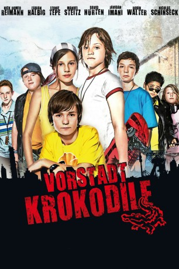

#6331 Vorstadtkrokodile
 
 IMDB-Wertung: 6.2 / 10
IMDB-Wertung: 6.2 / 10  Metascore: 0
Metascore: 0 
Der zehnjährige Hannes, der bei seiner jungen, alleinerziehenden Mutter aufwächst, will unbedingt von der coolsten Jugendbande im Ort, den Vorstadtkrokodilen, aufgenommen werden und gerät bei der notwendigen Mutprobe in Lebensgefahr. In letzter Minute wird er von Kai gerettet, der auch unbedingt zur Bande gehören möchte. Das Problem: Kai sitzt im Rollstuhl und ist für die Kinder nur der “Spasti”, der noch nicht mal wegrennen kann, wenn’s brenzlig wird. Als Kai einen nächtlichen Einbruch beobachtet, wird er plötzlich interessant für die Krokodile, denn er ist ihr einziger Zeuge. Er wiederum redet nur, wenn er mitkommen darf. Mit seiner Hilfe und mit kroko-typischem Ideenreichtum, Mut und Phantasie machen sich die Vorstadtkrokodile auf, den Fall zu lösen und es mit der scheinbar übermächtigen Einbrecherbande aufzunehmen.
Jahr: 2009
Dauer: 96 Minuten
FSK: 6
Land: Deutschland Studio: Constantin FilmTonspuren:
Untertitel:
Auflösung: 1080p (1920x1040) Größe: 10342 MB
Genre: Abenteuer, Familie
Regisseur: Christian Ditter
Drehbuch: Giancarlo De Cataldo
Soundtrack:
Darsteller:
 Nick Romeo Reimann als Hannes
Nick Romeo Reimann als Hannes- Fabian Halbig als Kai
 Nora Tschirner als Mutter Hannes
Nora Tschirner als Mutter Hannes Maria Schrader als Mutter Kai
Maria Schrader als Mutter Kai Martin Semmelrogge als Minigolfplatzbesitzer
Martin Semmelrogge als Minigolfplatzbesitzer- Leonie Tepe als Maria
- Manuel Steitz als Olli
- David Hürten als Frank
- Javidan Imani als Jorgo
- Robin Walter als Peter
- Nicolas Schinseck als Elvis
- Smudo als Vater Kai
- Jacob Matschenz als Dennis
- Axel Stein als Kevin
- Oktay Özdemir als Achmed
- Marina Hambuch als Emma
- Heiner Beeker als Feuerwehrmann
- Achim Bauer als Polizist
- Klaus Neugebauer als Biker
- Christoph Blum als Mann am Unfallort
- Horst Neugebauer als Vater Dennis & Frank
- Oliver Zentgraf als Skateboarder
 Ralf Richter als Chefpolizist
Ralf Richter als Chefpolizist- Udo Hesselmann als Fabrikarbeiter
- Olli Briesch als Radiomoderator , uncredited
Datei: X:\4-Tetralogie(M-Z)\Vorstadtkrokodile\Vorstadtkrokodile (2009, FSK6, 1920x1040).mkv seit 08.06.2017
Festplatte: HD Collection-3(N-Z)-6(A-Z)
 Es gibt insgesamt 7 Filme in der Gruppe '4-Tetralogie(M-Z)\Vorstadtkrokodile'
Es gibt insgesamt 7 Filme in der Gruppe '4-Tetralogie(M-Z)\Vorstadtkrokodile'